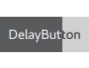

DelayButton QML Type
Check button that triggers when held down long enough. More...
| Import Statement: | import QtQuick.Controls |
| Inherits: |
Properties
- delay : int
- progress : real
- transition : Transition
Signals
Detailed Description

DelayButton is a checkable button that incorporates a delay before the button becomes checked and the activated() signal is emitted. This delay prevents accidental presses.
The current progress is expressed as a decimal value between 0.0 and 1.0. The time it takes for activated() to be emitted is measured in milliseconds, and can be set with the delay property.
The progress is indicated by a progress indicator on the button.
See also Customizing DelayButton and Button Controls.
Property Documentation
delay : int |
progress : real |
This property holds the current progress as displayed by the progress indicator, in the range 0.0 - 1.0.
transition : Transition |
This property holds the transition that is applied on the progress property when the button is pressed or released.
Signal Documentation
activated() |
This signal is emitted when progress reaches 1.0.
Note: The corresponding handler is onActivated.